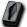
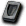

※各怪物的編輯請由標題的鉛筆圖示進行。掉落物品的編輯也可以從掉落物品欄的
１｜２｜３｜堡壘1｜堡壘2｜堡壘3｜神聖傳送門
出現怪物
莉希涅守衛
| 莉希涅守衛 | Lv | AC | MC | AAR | SAR | 掉落物品 |
| HP:245,000 | 120 | -40 | -35 | 32 | 37 | 莉希涅中寶石、莉希涅臉部寶石、戴莫尼翁外殼寶石、戴莫尼翁指虎(@3)、戴莫尼翁短刀(@3)、戴莫尼翁斧(@3)、戴莫尼翁劍(@3)、戴莫尼翁法杖(@3)、戴莫尼翁護脛(@4)、戴莫尼翁項鍊(@5)、[4次]雙子3階段升級捲軸、[4次]短刀2階段升級捲軸、 [4次]魔法卡組5階段升級捲軸、 [4次]魔法卡組5階段升級捲軸、 [4次]耳環2階段升級捲軸 [4次]耳環2階段升級捲軸 |
| 善惡值 | 信仰值 | 金錢 | 攻擊屬性 | 防禦屬性 | ||
| 4,067 | 4,067 | 2,401 | 隨機 | 隨機 | ||
| STR | DEX | INT | WIS | CON | ||
| 110 | 100 | 70 | 70 | 36 |
備註:遠距離攻擊？ 鎖定守護者
羅剎聖天使女武神
| 羅剎聖天使女武神 | Lv | AC | MC | AAR | SAR | 掉落物品 |
| HP:353,800 | 120 | -26 | -21 | 34 | 39 | 莉希涅中寶石、莉希涅臉部寶石、戴莫尼翁法杖(@3)、戴莫尼翁卡組(@3)、戴莫尼翁緊身胸衣(@3)、戴莫尼翁賽普爾(@3)、  阿爾法矩陣、 德爾塔矩陣、德爾塔阿莫爾寶石、[4次]魔杖5階段升級捲軸 |
| 善惡值 | 信仰值 | 金錢 | 攻擊屬性 | 防禦屬性 | ||
| 4,675 | 4,675 | 3,448 | 隨機 | 隨機 | ||
| STR | DEX | INT | WIS | CON | ||
| 180 | 150 | 80 | 70 | 26 |
備註:MP/SP傷害 遠距離時瞬間移動到玩家背後，背後被佔據時也會飛到側面或正面減弱突襲
莉希涅水晶
| 莉希涅水晶 | Lv | AC | MC | AAR | SAR | 掉落物品 |
| HP:52,500 | 120 | -37 | -47 | 50 | 55 | 莉希涅中寶石、莉希涅臉部寶石、戴莫尼翁踐踏寶石、戴莫尼翁絞殺寶石、戴莫尼翁原型寶石 |
| 善惡值 | 信仰值 | 金錢 | 攻擊屬性 | 防禦屬性 | ||
| 5,400 | 5,400 | 1,910 | 隨機 | 隨機 | ||
| STR | DEX | INT | WIS | CON | ||
| 100 | 70 | 120 | 80 | 46 |
備註:接近2格以內時，依MC而定的範圍攻擊
神聖服從
| 神聖服從 | Lv | AC | MC | AAR | SAR | 掉落物品 |
| HP:251,250 | 120 | -37 | -27 | 35 | 40 | 莉希涅中寶石、莉希涅臉部寶石、戴莫尼翁踐踏寶石、戴莫尼翁項鍊(@4)、戴莫尼翁貝里昂、戴莫尼翁貝里德特、戴莫尼翁德爾馬林(@4)、戴莫尼翁德爾馬提卡(@4)、戴莫尼翁護脛(@4)、戴莫尼翁寶珠(@3)、[4次]戒指2階段升級捲軸、[4次]劍4階段升級捲軸、[4次]斧4階段升級捲軸、伽瑪阿莫爾寶石、睡眠恢復捲軸製作法 |
| 善惡值 | 信仰值 | 金錢 | 攻擊屬性 | 防禦屬性 | ||
| 5,949 | 5,949 | 3,163 | 隨機 | 隨機 | ||
| STR | DEX | INT | WIS | CON | ||
| 120 | 80 | 160 | 100 | 66 |
備註:MP/SP傷害攻擊
掉落備忘
[4次]彎刀2階段附魔捲軸、[4次]彎刀4階段附魔捲軸、戴莫尼翁帕爾丹(@4)